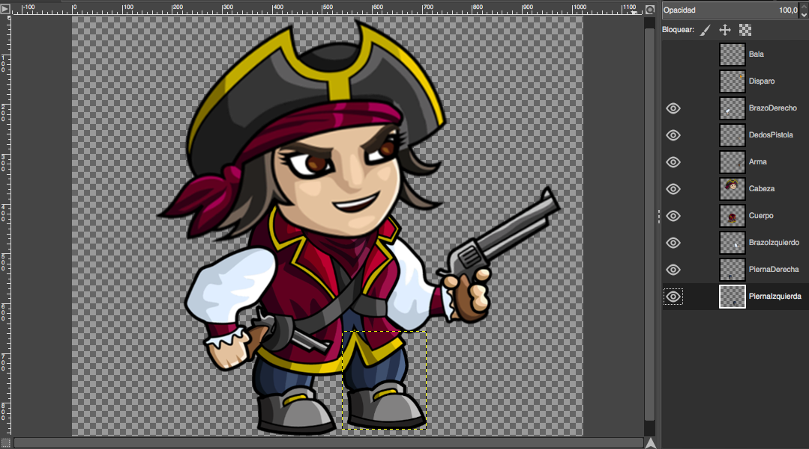
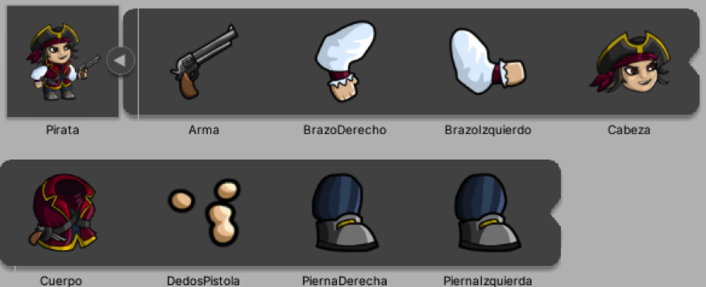

En este tema, instalaremos los paquetes necesarios para añadir esqueletos a nuestros Sprites e importaremos las imágenes del personaje que vamos a utilizar.
Necesitamos instalar 2 paquetes (packages) para poder realizar la animación 2D usando huesos:
2D Animation y 2D PSD Importer.
Para ello iremos al menú principal y seleccionaremos Window/Package Manager.
Aquí nos aparecerán tanto los paquetes que tenemos instalados como todos aquellos paquetes disponibles para
nuestro proyecto.
Los paquetes también podrían estar en revisión si la versión del propio paquete no estuviera totalmente liberada. Para que nos aparezcan en la lista de paquetes disponibles, tendremos que pinchar en Advanced y marcar la opción Show Preview Packages.
El paquete 2D Animation nos brinda todas las herramientas necesarias para la creación del
esqueleto.
El paquete 2D PSD Importer lo utilizaremos cuando usemos un archivo de imágenes por capas
(.psd) que contendrá todas las partes de nuestro personaje montadas y posicionadas cada una en una capa
diferente.
Lo primero que haremos será crearnos un archivo de imágenes con alguna aplicación que nos permita crear las
imágenes por capas. Para este tutorial hemos utilizado la herramienta GIMP ya que es gratuita.
También podemos utilizar Photoshop si lo tenemos instalado.
Buscamos el personaje al que queremos articular.
Una página donde podéis descargaros Sprites de forma gratuita es https://craftpix.net/freebies/. Nos descargaremos uno que tenga las partes del cuerpo por separado.
Abriremos GIMP y crearemos un archivo nuevo. Iremos abriendo capas sobre este archivo y metiendo en cada capa las partes del cuerpo por separado que previamente nos hemos descargado.

Tenemos que colocarlas en el orden en el que luego queramos utilizar cada capa ya que Unity lo organiza por
este orden, aunque después es posible cambiarlo.
Una vez colocadas todas las capas, guardaremos el archivo como .XCF (formato de GIMP). Después
podremos exportar este archivo desde GIMP a formato Photoshop (extensión .PSD).
Una vez que tenemos el archivo con extensión .PSD (ya sea exportado desde GIMP o creado
en Photoshop) lo renombraremos a .PSB ya que éste es el formato que admite Unity. Al renombrarlo nos
dirá que el archivo puede quedar inutilizado, pero lo renombramos igualmente.
Una vez que tengamos nuestro personaje en formato PSB. nos crearemos una carpeta en Unity a la que
llamaremos Sprites y arrastramos el archivo a la carpeta de nuestro proyecto.
En ese momento, el paquete que instalamos anteriormente (2D PSD Importer) accederá a las capas y creará una
imagen por cada capa del archivo usando el nombre que le hayamos puesto a cada capa como nombre de la imagen.

Una vez importadas las imágenes, en la parte de abajo a la derecha hay un pequeño deslizador para ver lo
importado más grande o más pequeño. Si lo vemos lo as pequeño posible, veremos una jerarquía con sus nombres
y tipos de objeto.
Aquí, aparecerán los objetos por duplicado, pero no lo están, ya que cada uno tiene su función. Por ejemplo,
con el brazo derecho, creará un Game Object (GO) que representa el brazo derecho y el otro objeto
será la textura que tendrá dicho brazo.
Además, también se crea automáticamente un Sprite Sheet con todas las imágenes importadas.

Una vez que ya tenemos nuestro personaje, lo seleccionamos y en el Inspector nos aparecerán las siguientes
opciones que tenemos que tener en cuenta:
- Pixels Per Unit: nos dará el tamaño de la imagen en el escenario. Si queremos que su
tamaño sea más pequeño, aumentaremos el valor y si lo queremos más grande, lo disminuiremos. Para poder ver
como queda, arrastraremos nuestro personaje a la escena y le daremos al botón Apply para ver los
cambios en el momento.
- Sprite Mode: tiene que estar en Multiple ya que nuestro personaje esa compuesto
de varias partes.
- Charácter Rig: esta opción tendrá que estar activada para poder realizar el esqueleto.